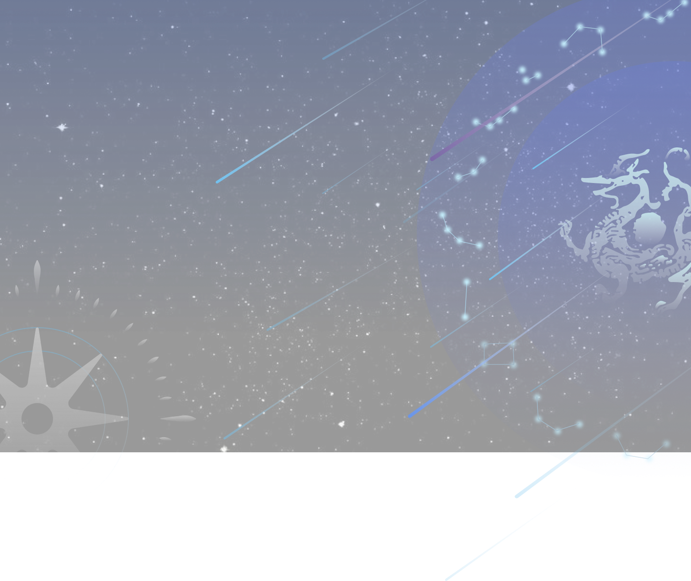

解读唐诗中的星象密码


中国传统星象有不少于六千年的发展和演变历史。几千年来，人们对于天体的向往和探索从未停止。
古人的天具有更多人文色彩，星辰不仅仅是星辰，它们的形态、运行等等都与人事密不可分，人们对星辰有神秘的预测，也有审美的欣赏追求。古代社会的星象文化反映自然的同时更多的反映了人文思想，由表及里地影响了文人的文学创作。
经过前期星象文化充足丰沛的发展，到了唐代，已经具备了一套完整的星象谱系和传播量广泛的星宿知识，社会大气候已经形成。封建社会发展顶端的一个大时代里，政治、经济、文化各方面繁荣的大唐王朝，星象文化由表及里地渗入到了唐诗创作中，创造了文学进程中的一方独特审美区域，久负盛名的“唐诗气象”看做是星象文化的一种弥散也无不可。我们想以唐诗为镜，一窥古人仰望的灿烂星空，体会古人通过星星寄托的情思感触。
以全唐诗大数据集为样本,我们深入挖掘和分析了唐代289年间蕴含璀璨星象的优美诗篇，处理并归纳了超过48000首的杰出作品，近三千位诗人的创作轨迹，构建起多维交叉的词人-作品-意象-情感星象图谱。我们发现，在流传千古的美妙诗句背后，往往透过层层星空月色的意境描绘，抒发了诗人们丰富细腻的情感世界,展现了他们对这大千世界变幻无常的深邃体悟。
古人的天具有更多人文色彩，星辰不仅仅是星辰，它们的形态、运行等等都与人事密不可分，人们对星辰有神秘的预测，也有审美的欣赏追求。古代社会的星象文化反映自然的同时更多的反映了人文思想，由表及里地影响了文人的文学创作。
经过前期星象文化充足丰沛的发展，到了唐代，已经具备了一套完整的星象谱系和传播量广泛的星宿知识，社会大气候已经形成。封建社会发展顶端的一个大时代里，政治、经济、文化各方面繁荣的大唐王朝，星象文化由表及里地渗入到了唐诗创作中，创造了文学进程中的一方独特审美区域，久负盛名的“唐诗气象”看做是星象文化的一种弥散也无不可。我们想以唐诗为镜，一窥古人仰望的灿烂星空，体会古人通过星星寄托的情思感触。
以全唐诗大数据集为样本,我们深入挖掘和分析了唐代289年间蕴含璀璨星象的优美诗篇，处理并归纳了超过48000首的杰出作品，近三千位诗人的创作轨迹，构建起多维交叉的词人-作品-意象-情感星象图谱。我们发现，在流传千古的美妙诗句背后，往往透过层层星空月色的意境描绘，抒发了诗人们丰富细腻的情感世界,展现了他们对这大千世界变幻无常的深邃体悟。
繁星点点，你我其名

诗词中常见的星象名称
在先秦时代，中国古人已经有朦胧的天体意识，形成了一套完整的天体系统，三垣、四象、五星、二十八星宿是古代最主流的星象学说派别。
天球赤道

黄道

二十八星区

太阳系